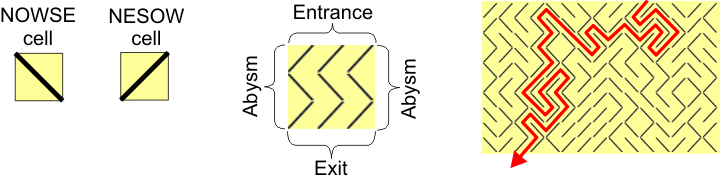

| Sapitaur's Labyrinth |
In the distant planet Omicron Persei 8, there is a huge ocean of rotten dark water. In the middle of the ocean, there is the island of Nevreturn, where the damned Omicronian prisoners are sent. And on the island, there is an intricate labyrinth; only those prisoners who are able to escape from the labyrinth are given the merciful death. The labyrinth is surrounded by a deep abysm, where the mythical Sapitaur --half frog, half bull-- lives, eating all those Omicronians who took a wrong course in the labyrinth.
You are an unfortunate Omicronian prisoner. Will you be able to escape from the labyrinth?
Sapitaur's Labyrinth consists of a matrix of cells. There are two kinds of cells, as shown in the figure below:
- NOWSE. There is a wall extending from the North-West of the cell to the South-East.
- NESOW. There is a wall extending from the North-East of the cell to the South-West.

Left: the two kinds of cells. Middle: a sample
labyrinth with 3x3 cells, and 2 paths to escape. Right: a labyrinth with
15x10 cells, and only 1 path to escape (in red).
As you can see in the figure above, the entrance to the labyrinth is in the north (the upper row of the matrix), the exit is in the south (the lower row of the matrix), and the abysm extends along both sides of the labyrinth (beyond the first and last column of the matrix).
You have to count how many different paths exist to go from the entrance to the exit of the labyrinth. Obviously, these paths cannot go through the abysm.
The first line of the input contains an integer M, indicating the number of test cases.
For each test case, the first line contains two integers N M, between 1 and 500, where N is the width of the labyrinth (number of columns) and M is the height (number of rows). M lines follow; each line has N characters: "\" for NOWSE cells; and "/" for NESOW cells.
For each test case, the output should consist of an integer indicating the number of different paths from the entrance to the exit of the labyrinth.
Observe that these samples correspond to the labyrinths in the figure above.
2 3 3 /// \\\ /// 15 10 ////\\\////\\// /\\\\\/\/\/\\/\ \\\//\\\/\////\ //\\\/\///\//\\ \/\//\\/\\\\/\\ ////////\\///\/ \\\\\\//\\\\\/\ \\/\//////\\/// \/\\/////\/\/\/ \///\///\\\\//\
2 1